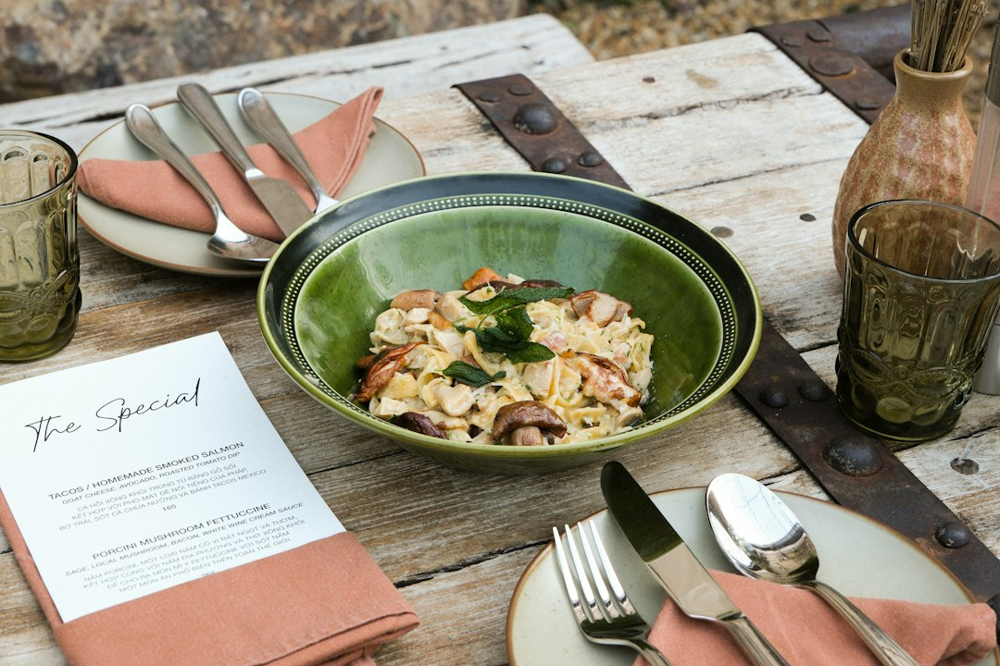

Riduzione Sprechi e Costi nella Ristorazione: Come Digitalizzare il Menu con Locanda Digitale

Riduzione drastica degli sprechi di tempo e costi di gestione per Ristoratori, Chef, Titolari di Trattorie, Pizzerie Gourmet e Agriturismi
- Menu cartacei tradizionali non comunicano efficacemente la qualità dei piatti e sprecano risorse.
- I costi elevati per produzioni video professionali limitano la comunicazione efficace sui social.
- Locanda Digitale offre una suite AI che digitalizza menu cartacei con foto HD e crea video 3D a costi contenuti, abbattendo tempi e spese di gestione.
Analisi approfondita della notizia e delle implicazioni operative
Nel contesto attuale della ristorazione, l'uso di menu cartacei di solo testo rappresenta una sfida crescente. Le abitudini dei clienti e i canali di comunicazione digitali impongono agli operatori del settore (ristoratori, chef, titolari di trattorie, pizzerie gourmet e agriturismi) un aggiornamento operativo e strategico. Un menu statico e poco coinvolgente produce un basso tasso di interazione e scarso appeal emotivo, soprattutto quando la qualità e la cura gastronomica del piatto meriterebbero una presentazione visiva più efficace.
La presenza sui social media è oggi imprescindibile, ma spesso il gap comunicativo fra contenuti digitali e offerta reale è amplificato dai costi proibitivi di produzioni video professionali. Ciò genera un vuoto nelle possibilità di marketing diretto e indiretto e limita la capacità di attrarre nuovi clienti o fidelizzare quelli esistenti.
Le conseguenze e i costi di non agire
Ignorare questo problema operativo si traduce in inefficienza e sprechi economici: menu cartacei datati e statici non stimolano l’acquisto, riducono il valore percepito dei piatti e sprecano carta e tempo per aggiornamenti frequenti. L’assenza di materiali visivi adeguati limita fortemente la capacità di comunicare su social e piattaforme digitali, elemento ormai centrale per il successo commerciale nel settore.
Inoltre, rivolgersi a videomaker professionisti per contenuti multimediali comporta costi elevati, difficilmente giustificabili soprattutto per piccoli e medi operatori della ristorazione. Ciò crea barriere alla digitalizzazione, mantenendo inefficienze operative, aumentando il carico di lavoro interno e aumentando i costi fissi. La sommatoria di questi fattori produce un incremento del rischio competitivo e una perdita di mercato.
Come Locanda Digitale risolve il problema
Locanda Digitale di RM Studio si propone come una soluzione nativa SaaS innovativa, pensata per ridurre drasticamente gli sprechi di tempo e costi nella gestione quotidiana di ristoratori, chef, pizzerie gourmet, trattorie e agriturismi. La piattaforma integra una suite AI avanzata che digitalizza il menu cartaceo convertendolo in un’esperienza visiva accattivante, facilmente fruibile tramite QR Code posizionati sui tavoli.
Lo strumento consente di creare video spot 3D verticali (formato 9:16) a 60 FPS a partire da semplici fotografie reali dei piatti, permettendo così la produzione autonoma di contenuti multimediali di alta qualità, dall’impatto emotivo forte e coinvolgente, perfetti per social media e campagne marketing digitali.
Questa digitalizzazione dei contenuti elimina totalmente la necessità di investimenti onerosi in videomaking, velocizza l’aggiornamento del menu e permette di veicolare con efficacia la percezione di qualità e autenticità gastronomica, trasformando ogni piatto in un’esperienza visiva unica e facilmente condivisibile.
| Gestione Tradizionale | Con Locanda Digitale |
|---|---|
| Menu cartaceo solo testo, poco attraente | Menu digitali con foto HD e aggiornamenti rapidi via QR Code |
| Costi elevati per video professionali | Video 3D verticali creati automaticamente da foto a 60 FPS, senza costi aggiuntivi |
| Comunicazione digitale inefficace, bassa interazione social | Contenuti social accattivanti e coinvolgenti per maggiore visibilità e fidelizzazione |
| Aggiornamenti menu lenti, spreco carta e tempo | Aggiornamenti immediati digitali, zero sprechi di carta |
💡 Ti è stato utile questo approfondimento?
Condividilo con un collega o un amico del settore Ristoratori, Chef, Titolari di Trattorie, Pizzerie Gourmet e Agriturismi a cui potrebbe interessare!
FAQ - Domande Frequenti per i Professionisti della Ristorazione
1. Come posso integrare Locanda Digitale nel mio locale senza complicazioni tecniche?
La piattaforma Locanda Digitale è progettata per una semplice integrazione self-service: basta caricare le fotografie dei piatti e digitalizzare il menu corrente. Il sistema genera automaticamente QR Code e video 3D, senza bisogno di competenze specifiche e senza interventi invasivi sulle strutture.
2. Quali sono i costi ricorrenti associati a Locanda Digitale?
Non esistono abbonamenti mensili o costi nascosti. Si può scegliere tra Social 3D Starter a €79 una tantum o Visual Menu Pro a €149, entrambi senza vincoli ricorrenti, offrendo grande stabilità finanziaria e controllo sui costi.
3. Quanto velocemente posso aggiornare il mio menu e i contenuti multimediali?
Gli aggiornamenti sono immediati: modifiche alle foto o ai piatti vengono automaticamente convertite in nuovi video o menu digitali, permettendo una gestione agile e dinamica dell’offerta gastronomica in tempo reale.
Inizia Subito
Social 3D Starter a €79 una tantum o Visual Menu Pro a €149. Nessun abbonamento.
Fonti Ufficiali e Risorse Esterne
Scopri l'Intelligenza Artificiale per la tua attività
Ottimizza i processi e aumenta le vendite con le soluzioni B2B di RM Studio.
Scopri Locanda Digitale